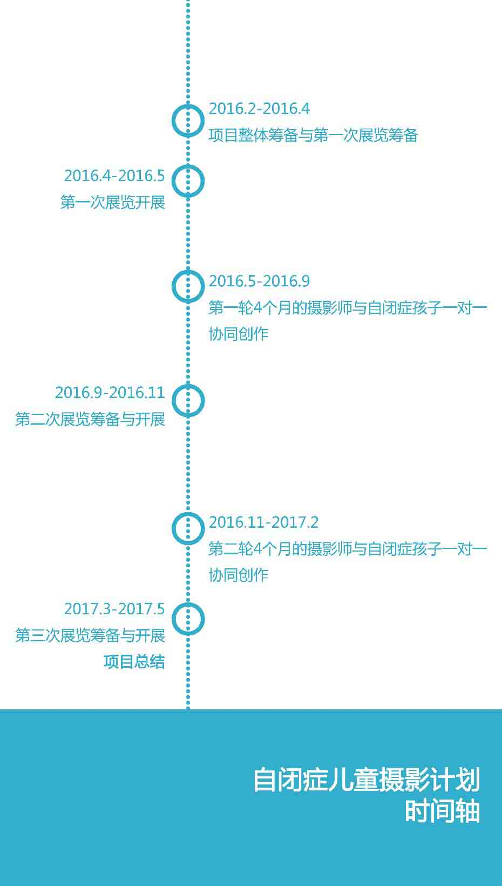
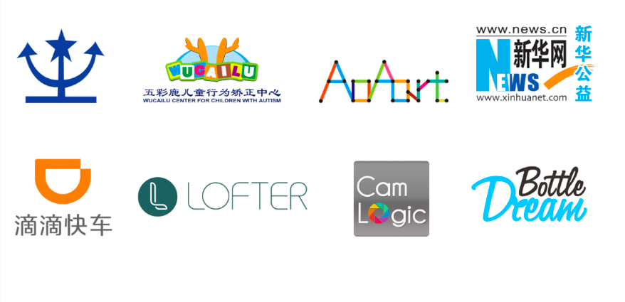

一个好奇
在各种媒体报道中，我们都或多或少的看到过关于自闭症孩子的绘画或音乐方面的才能的故事。
如果把相机交到自闭症孩子的手中，会发生什么呢？
摄影，是不是也可以成为他们的另一种表达方式？
一些故事
当我们带着这些好奇找到自闭症老师们，听到了这些故事。
一个14岁的中国男孩，可以自己把单反相机彻底拆卸，再组装完好，无师自通。
一个12岁的德国男孩，从小爱看火车。有天父亲的朋友送了他一台自己的相机，于是他开 始喜欢上了拍火车。孩子更开心了，也更喜欢出门旅行。
在北京的一所特教学校，当某天课间，老师无意间将学生拍的照片投影到了教室的大屏幕上，她看到孩子原本平静的脸上，突然灵动了起来。
他们，都是自闭症孩子。
在瑞典时，我与当地一位曾经看护重度自闭症孩子们数年的老师聊天。他说，如果有人真的想成为一个好老师，那么先把自闭症孩子们当作学生吧，因为他们会像一面镜子一样，投射出你的教学乃至自身上许多的不足。
当我问到他为何可以坚持这份工作这么多年时，他说：
Because it’s all about communication.
因为一切的一切都关乎沟通。
一次跨度16个月的沟通尝试
每个独立精神世界都是一座岛，它们有其独特的生态系统，而每个人，都是这座岛的造物主。 那么不同的岛屿之间如何能够产生呼应与联系？ ——通过各种沟通方式去架起的“桥”，撑起的“船”。
我们相信，如同音乐与绘画，摄影也是自闭症群体与非自闭症群体间建立沟通的诸多方式中，非常值得探索的一种。 我们希望，可以把摄影带给自闭症孩子们，也藉由摄影，引发自闭症与公众个体间更加平等自然的沟通。
我们希望可以通过这个项目：
- 把摄影作为一种表达方式带给自闭症孩子，给他们及他们的家庭带去更多欢乐；
- 以摄影为媒介，进一步打开公众与自闭症个体间沟通的渠道，为自闭症群建立一个平等、自然的沟通状态，给孩子们一个更加包容与健康的社会成长环境；
- 对于一部分经济困难的家庭，如果对方有需求，我们也会尝试将包括把孩子们的摄影作品做成艺术衍生品等方式纳入到项目的后期设计中，帮助这部分家庭缓解一些经济压力。
3场展览（线下+线上），两轮共8个月摄影师与自闭症孩子一对一的协同创作，全志愿者团队无偿众包发起与推进。
一次跨度16个月，以摄影为媒介的沟通尝试。

“自闭症儿童摄影计划”的第一场展览
此次展览作为“自闭症儿童摄影计划”的第一场展览，将在2016年4月2号国际自闭症日当天14:00在北京悦·美术馆开幕。
此次展览以 致·岛·语 (Echoing Islands) 为主题。
42位受邀摄影师将分别基于其对于自闭症群体的认识，自选一张作品。通过摄影作品的阐释，来呼应他们眼中自闭症孩子的内心世界。同时，也是摄影师作为公众的一部分，对自闭症群体发出的沟通邀请。
因为这个项目本身也包含了多种探索，所以项目全程除了摄影作品外，在征求孩子及家长同意的前提下，我们还会对项目全程、展览及协同创作部分，分别以文字和视频等方式对其中的故事进行记录与分享。
在项目进行过程中，此项目以任何形式（包括但不限于，捐款/拍卖收入/摄影器材捐助等）所获得的所有资金或摄影器材等捐赠将全部进入“自闭症儿童摄影计划”基金，由北京星星雨教育研究所监督管理并公示使用情况。
目前项目合作机构&平台

专业机构支持
星星雨北京星星雨教育研究所
五彩鹿儿童行为矫正中心
AoAart天真者的绘画工作室
企业支持
网易LOFTER
滴滴快车
媒体支持
新华网公益频道
相机逻辑 CamLogic
BottleDream